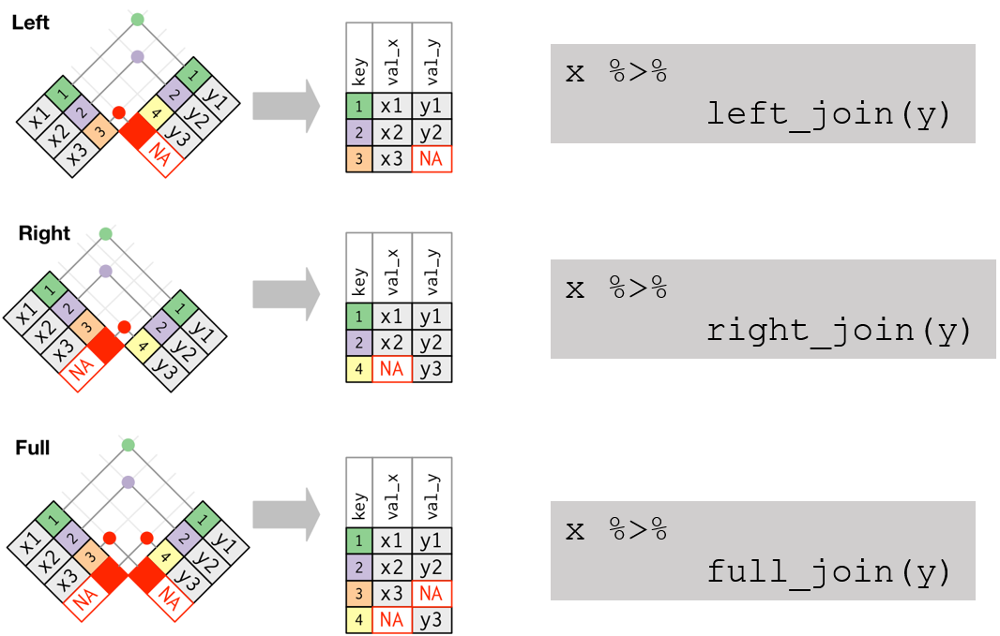

Mutating joins: add new variables to one data frame from matching observations in another.
Example: We want to combine data on infection cases and population size for each year and country.
# A tibble: 6 × 3
country year cases
<chr> <chr> <int>
1 Afghanistan 1999 745
2 Afghanistan 2000 2666
3 Brazil 1999 37737
4 Brazil 2000 80488
5 China 1999 212258
6 China 2000 213766
# A tibble: 6 × 3
country year population
<chr> <chr> <int>
1 Afghanistan 1999 19987071
2 Afghanistan 2000 20595360
3 Brazil 1999 172006362
4 Brazil 2000 174504898
5 China 1999 1272915272
6 China 2000 1280428583
Relational Data
The variables that connect each pair of tables are called keys.
A key is a variable (or set of variables) that uniquely identifies an observation.
What is a key in this dataset?
# A tibble: 6 × 3
country year cases
<chr> <chr> <int>
1 Afghanistan 1999 745
2 Afghanistan 2000 2666
3 Brazil 1999 37737
4 Brazil 2000 80488
5 China 1999 212258
6 China 2000 213766
Relational Data
Is there a unique key in mpg?
# A tibble: 234 × 11
manufacturer model displ year cyl trans drv cty hwy fl class
<chr> <chr> <dbl> <int> <int> <chr> <chr> <int> <int> <chr> <chr>
1 audi a4 1.8 1999 4 auto… f 18 29 p comp…
2 audi a4 1.8 1999 4 manu… f 21 29 p comp…
3 audi a4 2 2008 4 manu… f 20 31 p comp…
4 audi a4 2 2008 4 auto… f 21 30 p comp…
5 audi a4 2.8 1999 6 auto… f 16 26 p comp…
6 audi a4 2.8 1999 6 manu… f 18 26 p comp…
7 audi a4 3.1 2008 6 auto… f 18 27 p comp…
8 audi a4 quattro 1.8 1999 4 manu… 4 18 26 p comp…
9 audi a4 quattro 1.8 1999 4 auto… 4 16 25 p comp…
10 audi a4 quattro 2 2008 4 manu… 4 20 28 p comp…
# … with 224 more rows
Joining tables: Example
table6a
# A tibble: 6 × 3
country year cases
<chr> <chr> <int>
1 Afghanistan 1999 745
2 Afghanistan 2000 2666
3 Brazil 1999 37737
4 Brazil 2000 80488
5 China 1999 212258
6 China 2000 213766
table6b
# A tibble: 6 × 3
country year population
<chr> <chr> <int>
1 Afghanistan 1999 19987071
2 Afghanistan 2000 20595360
3 Brazil 1999 172006362
4 Brazil 2000 174504898
5 China 1999 1272915272
6 China 2000 1280428583
Joining tables: Example
table6a %>%left_join(table6b, by =c("country", "year"))
# A tibble: 6 × 4
country year cases population
<chr> <chr> <int> <int>
1 Afghanistan 1999 745 19987071
2 Afghanistan 2000 2666 20595360
3 Brazil 1999 37737 172006362
4 Brazil 2000 80488 174504898
5 China 1999 212258 1272915272
6 China 2000 213766 1280428583
Understanding joins
Two tables, colored column represents the key, grey represents the value.
Inner Join
Match pairs of observations whenever keys are equal.
x %>%inner_join(y, by ="key")
Outer Join
An outer join keeps observations that appear in at least one of the tables. There are three types:

Defining key columns
Default: use all variables that appear in both tables.
left_join(x, y, by =NULL, copy =FALSE, suffix =c(".x", ".y"), ...)
Alternative:
define which columns using by =
flights %>%left_join(planes, by ="tailnum")
join by columns with different names
# match "dest" in table 'flights' with "faa" in table airportsflights %>%left_join(airports, c("dest"="faa"))
Alternative in base R
Summing up
Exercise
Reproduce the following figure using table4a and table4b
Joining, by = c("country", "year")
Binding rows
We can bind rows of multiple tables with identical columns